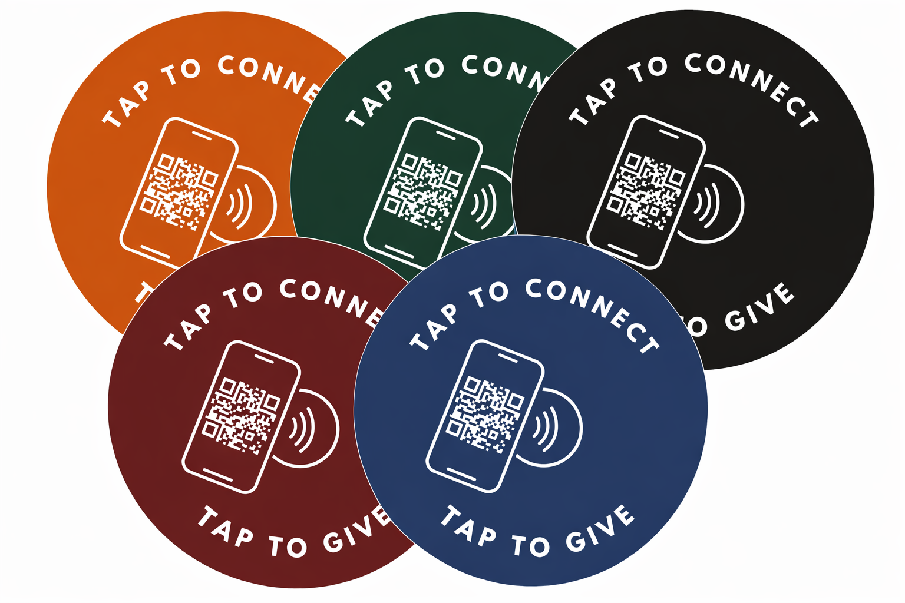

DIY Tap-to-Give for Churches: NFC Giving Without Monthly Fees
You already pay for a giving platform. You don’t need another one just to pass an offering plate. Here’s how to add tap-to-give to your church for a one-time cost of $450—no subscriptions, no middleware, no vendor lock-in.

Why DIY Tap-to-Give Makes Sense
Let’s be honest about what most “tap-to-give” solutions actually are: they’re subscription platforms that happen to include NFC hardware. You’re not paying $99–$199 per month for a tiny chip. You’re paying for a middleman—a dashboard, a donor CRM, analytics you may never check, and a giving page that duplicates the one you already have.
Think about it. Your church almost certainly already uses a giving platform—Tithely, Subsplash, Planning Center Giving, Pushpay, Donorbox, or something similar. You’re already paying for that. Your donors already have accounts there. Your finance team already runs reports from it. So why would you pay for a second giving platform just to get a tap plate?
The Core Insight
NFC tap plates are hardware, not software. The chip stores a URL. The phone opens that URL. Everything after that—the giving form, payment processing, donor records, tax receipts—is handled by the platform you already use and trust. The plate is just the bridge between the pew and your existing giving page. That bridge doesn’t need a monthly fee.
A DIY approach cuts out the middleman. You buy the hardware. You point it at your existing giving page. You’re done. No new software to learn. No new vendor to manage. No new line item on the budget that the finance committee questions every quarter.
How NFC Tap Plates Actually Work (The 30-Second Version)
NFC stands for Near Field Communication. If you’ve ever tapped your phone at a coffee shop to pay with Apple Pay or Google Pay, you’ve used NFC. Tap plates use the exact same technology—just pointed at a different destination.
Here’s the entire technical explanation:
Phone taps the plate. The phone’s NFC reader powers the passive chip—no battery, no Wi-Fi, no Bluetooth needed.
The NFC chip sends a URL to the phone. That’s all it does—it’s basically a physical hyperlink.
The phone opens your church’s giving page in the browser. The donor gives through your existing platform. Done.
That’s it. No app to download. No QR code to scan. No Bluetooth pairing. No Wi-Fi connection required (the phone uses its own cellular data to load the page). The chip is passive—it has no battery and never needs charging. It’s powered entirely by the electromagnetic field from the phone’s NFC reader when it gets close enough. The same chip will work the same way ten years from now.
Works on Every Modern Phone
Every iPhone from the XR onward (2018+) reads NFC tags automatically—no app needed. Android phones have supported NFC natively for even longer. Your congregation doesn’t need to enable anything or install anything. They just tap.

Tap.Giving plates come in multiple colors, each with NFC chip and QR code backup
The DIY Setup: What You Actually Need
Here’s the complete checklist. It’s short.
Your church’s existing online giving URL
From Tithely, Subsplash, Planning Center, Pushpay, Donorbox, or whatever platform you already use. If you have a “Give” button on your website, you have this URL.
NFC tap plates from Tap.Giving
$3.50–$4.50 each, one-time cost. Free shipping. They arrive pre-programmed with your giving link—ready to use out of the box.
That’s it. There is no step three.
No software to install. No account to create with Tap.Giving. No dashboard to log into. No app for your ushers. No training required.
The Math That Sells Itself
Plus setup fees. Plus per-plate costs. And if you stop paying, the plates stop working.
One-time purchase. Free shipping. No fees ever again. The plates work until you physically destroy them.
That’s a 62% cost reduction in year one alone. And by year two, the subscription has cost $2,376 while your Tap.Giving plates are still $450, forever.
Where Does the Money Go?
With Tap.Giving, you’re paying for physical hardware—the NFC chip, the plate material, the adhesive backing, and shipping. That’s it. There’s no software layer to maintain, no servers to run on your behalf, no recurring cost to justify. You own the plates. They’re yours.
What Makes This Approach Different From Subscription Tap Platforms
Here’s a straightforward comparison so you can see exactly where the approaches diverge.
| Subscription Platforms | DIY with Tap.Giving | |
|---|---|---|
| Monthly cost | $49–$199/mo | $0 |
| Hardware cost | Often “included” (you’re renting it) | $3.50–$4.50/plate, one-time |
| Works with your existing giving page | Sometimes, but pushes you to theirs | Always—any URL you choose |
| If you stop paying | Plates stop working | Plates work forever |
| Vendor lock-in | Yes—tied to their ecosystem | None—switch platforms anytime |
| Setup complexity | Account creation, onboarding, training | Submit URL, receive plates, tap |
| Analytics dashboard | Yes (often redundant with your giving platform) | Use your giving platform’s reports |
| You own the hardware | Often no—it’s leased | Yes, completely |
The Subscription Trap
Here’s what nobody talks about: with subscription tap platforms, you’re essentially renting your own offering plates. Stop paying and the NFC chips redirect to a “subscription expired” page—or worse, stop responding entirely. Your congregation taps the plate, nothing happens, and you look unprepared. With Tap.Giving plates, there’s no kill switch. You bought them. They’re yours. They work as long as NFC technology exists.
Can I Really Update the Link Later?
This is the number one question we hear, and the answer is yes.
Tap.Giving plates use what’s called a lock-then-redirect method. Here’s how it works: the NFC chip on the plate is locked to a redirect URL (like tap.giving/r/your-church). That redirect URL then forwards to your actual giving page. The chip itself never changes—but the destination it points to can be updated at any time.
Real-World Scenario
Today: Your plates point to your Tithely giving page. Everything works great.
Next year: You switch from Tithely to Subsplash. You email Tap.Giving with your new URL.
Done: We update the redirect. Same physical plates, new destination. Your congregation doesn’t notice a thing.
No Reprogramming Needed
You don’t need an NFC writer, an app, or any technical skills to change where your plates point. Just reach out and we update the redirect on our end. The physical plates stay exactly where they are—on your offering trays, mounted in your lobby, wherever you put them. For a deeper dive into how NFC redirects and chip locking work, check out our NFC FAQ page.
Who This Approach Is Best For
DIY tap-to-give isn’t for every church. But it’s ideal for most of them. Here’s who tends to love this approach.
Happy With Your Giving Platform
You already use Tithely, Subsplash, or Planning Center. You like it. You just want a physical touchpoint in the pew—not a replacement for your whole giving stack.
Budget-Conscious Churches
Every dollar matters. You can’t justify another $100+/month line item. You’d rather spend $450 once and put the savings back into ministry.
Tech-Savvy Admins
You prefer owning your infrastructure. You don’t want another vendor login. You like the idea of a simple, transparent tool that does one thing well.
Church Plants & Small Churches
When you’re running on a shoestring, a $450 giving upgrade beats a $1,200/year commitment. Get the modern giving experience without the enterprise price tag.
Multi-Campus Churches
Need 50 plates across five campuses? That’s $175–$225 total with Tap.Giving. With a subscription platform charging per-campus or per-seat fees, you’d be looking at thousands per year. Scale without the scaling cost.
When a Full Platform Might Make More Sense
We want to be straightforward. The DIY approach isn’t the right fit if:
- You don’t have an online giving page yet and need a full giving solution from scratch
- You specifically want NFC-specific analytics (tap counts, time-of-day data, heat maps) beyond what your giving platform provides
- You need a built-in donor CRM tied directly to the tap interaction
For those use cases, a subscription platform may be worth the ongoing cost. But for the vast majority of churches—the ones that already have giving set up and just want a physical on-ramp—DIY is the smarter path.
Ready to Go DIY?
Skip the subscription. Buy the plates. Point them at your giving page. You could be up and running in a few weeks for less than the cost of a pizza dinner.
Questions? Email hello@tap.giving or call (832) 510-8788.